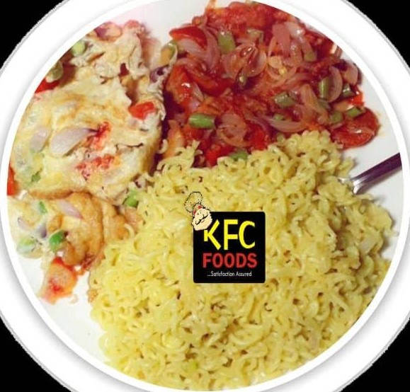
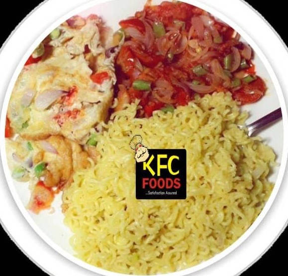

---Satisfaction Assured.
KFC Foods
KFC Menu
You Don't Need a Silver Spoon to Eat Good Food.
LOVE BY MANY


 


Catering Services

ALL EVENTS
How much food do you need? Get your Catering Order Right.
KFC can cater to any party or event irrespective of how big or small. We offer catering services to the public. In our menu palette, you’ll discover unique and sophisticated tastes - all of which will help you uncover the true greatness of Nigerian cuisine in your events.
Tell us about your event at contact-us@kfcfoods.com.ng
Food Delivery in Abuja

GET SERVED LIKE A KING
Not everybody knows or has the time to prepare tasty food. Looking for food delivery in abuja nearby? When you want to get served like a king, then KFC food delivery services should be your best choice.
Giving Back to the Society
We make a living by what we get, But we make a life by what we give.Winston Churchill
We are giving back to the society by making sure our remnant is packaged and given to the hungry people on the street.
Charity has 1% of every order that is made on our platform.